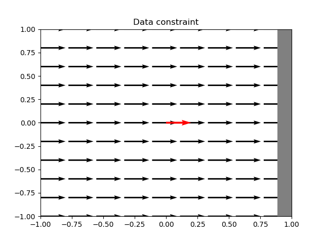
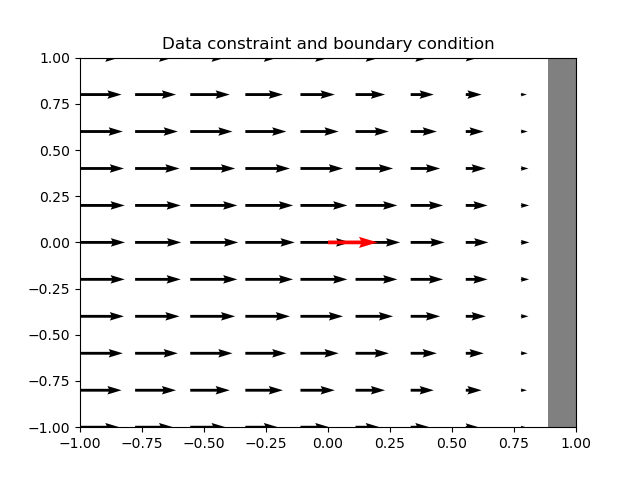
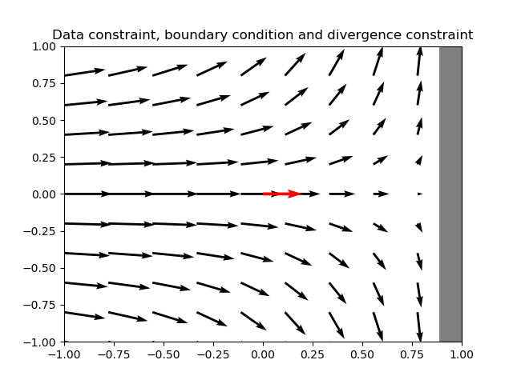
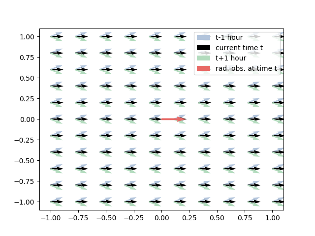

<!DOCTYPE html>
<html lang="en"><head><meta charset="UTF-8"/><meta name="viewport" content="width=device-width, initial-scale=1.0"/><title>DIVAnd HF Radar · DIVAnd_HFRadar.jl</title><script data-outdated-warner src="assets/warner.js"></script><link href="https://cdnjs.cloudflare.com/ajax/libs/lato-font/3.0.0/css/lato-font.min.css" rel="stylesheet" type="text/css"/><link href="https://cdnjs.cloudflare.com/ajax/libs/juliamono/0.044/juliamono.css" rel="stylesheet" type="text/css"/><link href="https://cdnjs.cloudflare.com/ajax/libs/font-awesome/5.15.3/css/fontawesome.min.css" rel="stylesheet" type="text/css"/><link href="https://cdnjs.cloudflare.com/ajax/libs/font-awesome/5.15.3/css/solid.min.css" rel="stylesheet" type="text/css"/><link href="https://cdnjs.cloudflare.com/ajax/libs/font-awesome/5.15.3/css/brands.min.css" rel="stylesheet" type="text/css"/><link href="https://cdnjs.cloudflare.com/ajax/libs/KaTeX/0.13.11/katex.min.css" rel="stylesheet" type="text/css"/><script>documenterBaseURL="."</script><script src="https://cdnjs.cloudflare.com/ajax/libs/require.js/2.3.6/require.min.js" data-main="assets/documenter.js"></script><script src="siteinfo.js"></script><script src="../versions.js"></script><link class="docs-theme-link" rel="stylesheet" type="text/css" href="assets/themes/documenter-dark.css" data-theme-name="documenter-dark" data-theme-primary-dark/><link class="docs-theme-link" rel="stylesheet" type="text/css" href="assets/themes/documenter-light.css" data-theme-name="documenter-light" data-theme-primary/><script src="assets/themeswap.js"></script></head><body><div id="documenter"><nav class="docs-sidebar"><div class="docs-package-name"><span class="docs-autofit"><a href>DIVAnd_HFRadar.jl</a></span></div><form class="docs-search" action="search/"><input class="docs-search-query" id="documenter-search-query" name="q" type="text" placeholder="Search docs"/></form><ul class="docs-menu"><li class="is-active"><a class="tocitem" href>DIVAnd HF Radar</a><ul class="internal"><li><a class="tocitem" href="#Formulation"><span>Formulation</span></a></li><li><a class="tocitem" href="#Tutorial"><span>Tutorial</span></a></li><li><a class="tocitem" href="#Reference"><span>Reference</span></a></li></ul></li></ul><div class="docs-version-selector field has-addons"><div class="control"><span class="docs-label button is-static is-size-7">Version</span></div><div class="docs-selector control is-expanded"><div class="select is-fullwidth is-size-7"><select id="documenter-version-selector"></select></div></div></div></nav><div class="docs-main"><header class="docs-navbar"><nav class="breadcrumb"><ul class="is-hidden-mobile"><li class="is-active"><a href>DIVAnd HF Radar</a></li></ul><ul class="is-hidden-tablet"><li class="is-active"><a href>DIVAnd HF Radar</a></li></ul></nav><div class="docs-right"><a class="docs-edit-link" href="https://github.com/gher-ulg/DIVAnd_HFRadar.jl/blob/master/docs/src/index.md" title="Edit on GitHub"><span class="docs-icon fab"></span><span class="docs-label is-hidden-touch">Edit on GitHub</span></a><a class="docs-settings-button fas fa-cog" id="documenter-settings-button" href="#" title="Settings"></a><a class="docs-sidebar-button fa fa-bars is-hidden-desktop" id="documenter-sidebar-button" href="#"></a></div></header><article class="content" id="documenter-page"><h1 id="DIVAnd-HF-Radar"><a class="docs-heading-anchor" href="#DIVAnd-HF-Radar">DIVAnd HF Radar</a><a id="DIVAnd-HF-Radar-1"></a><a class="docs-heading-anchor-permalink" href="#DIVAnd-HF-Radar" title="Permalink"></a></h1><p>The package <code>DIVAnd_HFRadar</code> allow one to interpolate surface current data on a regular grid. The primary use-case is for radial current measurements from high-frequency (HF) radars. But it can also be applied to any other current data, such as ADCPs or drifters.</p><h2 id="Formulation"><a class="docs-heading-anchor" href="#Formulation">Formulation</a><a id="Formulation-1"></a><a class="docs-heading-anchor-permalink" href="#Formulation" title="Permalink"></a></h2><p>The package <code>DIVAnd_HFRadar</code> aims to minimize the following cost function</p><p class="math-container">\[J_{\mathrm {vel}}(\vec u) = ||u||^2 + ||v||^2 +
\sum_{i=1}^N \frac{(\vec u_{i} \cdot \vec p_{i} - {u_r}_i)^2}{\epsilon^2_{i}},\]</p><p>where <span>$\vec u = \left(u,v\right)$</span> is the horizontal velocity vector, <span>$\vec p_i$</span> is the normalized vector pointing toward the corresponding HF radar site of the <span>$i$</span>-th radial observation <span>${u_r}_i$</span>, <span>$N$</span> is the number of radial observations and <span>$\epsilon^2_{i}$</span> represents the variance of the measurements noise (normalized by the background error variance). The operator <span>$||u||^2$</span> is given by (and likewise for the component <span>$v$</span>):</p><p class="math-container">\[||u||^2=\int_{\Omega}( \alpha_{2} \boldsymbol \nabla\boldsymbol \nabla u :
\boldsymbol \nabla\boldsymbol \nabla u +\alpha_{1} \boldsymbol \nabla u \cdot \boldsymbol \nabla u +
\alpha_{0}  u^{2}) \; d \Omega\]</p><h3 id="Boundary-condition"><a class="docs-heading-anchor" href="#Boundary-condition">Boundary condition</a><a id="Boundary-condition-1"></a><a class="docs-heading-anchor-permalink" href="#Boundary-condition" title="Permalink"></a></h3><p class="math-container">\[\vec u \cdot \vec n = 0,\]</p><p>where <span>$\vec n$</span> is the vector normal to the coastline <span>$\partial \Omega$</span>. At the open ocean boundaries, this constraint is not activated, allowing therefore a flow through the domain. The constraint on the normal velocity at the coastline is added as a weak constraint to the cost function:</p><p class="math-container">\[J_{\mathrm{bc}}(\vec u) = \frac{1}{\epsilon^2_{\mathrm{bc}}} \int_{\partial \Omega} (\vec u \cdot \vec n)^2 ds.\]</p><h3 id="Horizontal-divergence"><a class="docs-heading-anchor" href="#Horizontal-divergence">Horizontal divergence</a><a id="Horizontal-divergence-1"></a><a class="docs-heading-anchor-permalink" href="#Horizontal-divergence" title="Permalink"></a></h3><p>If we integrate the continuity equation over the surface layer and ignore the vertical velocity, we obtain an additional dynamical constraint on the horizontal velocity:</p><p class="math-container">\[\boldsymbol \nabla \cdot (h \vec u) \simeq 0.\]</p><p>where <span>$h$</span> is the average depth of the surface mixed layer or the total water depth where total water depth is shallower than the average depth of the surface layer. As before, this constraint is included in the cost function as a weak constraint with the following form:</p><p class="math-container">\[J_{\mathrm{div}}(\vec u) = \frac{1}{\epsilon^2_{\mathrm{div}}} \int_{\Omega} \left(\boldsymbol \nabla \cdot (h \vec u)\right)^2 dx\]</p><h3 id="Simplified-momentum-balance"><a class="docs-heading-anchor" href="#Simplified-momentum-balance">Simplified momentum balance</a><a id="Simplified-momentum-balance-1"></a><a class="docs-heading-anchor-permalink" href="#Simplified-momentum-balance" title="Permalink"></a></h3><p>In order to take the momentum balance into account, the cost function must include the time dimension and the surface elevation <span>$\eta$</span> is also a parameter of our cost function:</p><p class="math-container">\[\begin{aligned}
    \frac{\partial u}{\partial t} =&amp; f v  - g   \frac{\partial \eta}{\partial x} \\
    \frac{\partial v}{\partial t} =&amp; - f u - g   \frac{\partial \eta}{\partial y}
\end{aligned}\]</p><p>where <span>$g$</span> the acceleration due to gravity.</p><h2 id="Tutorial"><a class="docs-heading-anchor" href="#Tutorial">Tutorial</a><a id="Tutorial-1"></a><a class="docs-heading-anchor-permalink" href="#Tutorial" title="Permalink"></a></h2><p>To run these examples you need install Julia and the packages <code>DIVAnd</code>, <code>DIVAnd_HFRadar</code> and <code>PyPlot</code> which can be installed by these julia commands:</p><pre><code class="language-julia hljs">using Pkg
Pkg.add(&quot;DIVAnd&quot;)
Pkg.add(url=&quot;https://github.com/gher-ulg/DIVAnd_HFRadar.jl&quot;, rev=&quot;master&quot;)
Pkg.add(&quot;PyPlot&quot;)</code></pre><p>In Linux, you must also install the python package <code>matplotlib</code>. Under Debian/Ubuntu, you can do this via the shell command:</p><pre><code class="language-bash hljs">sudo apt install python3-matplotlib</code></pre><h3 id="Data-constraint"><a class="docs-heading-anchor" href="#Data-constraint">Data constraint</a><a id="Data-constraint-1"></a><a class="docs-heading-anchor-permalink" href="#Data-constraint" title="Permalink"></a></h3><p>In this example, we are setting up an idealized domain spanning from -1 to 1 with 10X11 grid points. The gray area on the right is a coastal wall.</p><pre><code class="language-julia hljs">using DIVAnd_HFRadar: DIVAndrun_HFRadar
using DIVAnd
using PyPlot

# size of the grid
sz = (10,11)

# depth (meters)
h = 50 * ones(sz)

# land-sea mask
# true is sea; false is land
mask = trues(sz)
mask[end,:] .= false

# 2D grid
xi,yi = DIVAnd.ndgrid(LinRange(-1,1,sz[1]),LinRange(-1,1,sz[2]))

# scale factor; inverse of the resolution
pm = ones(sz) / (xi[2,1]-xi[1,1]);
pn = ones(sz) / (yi[1,2]-yi[1,1]);

# radial observations
robs = [1.]

# direction of the observation (from North counted clockwise)
directionobs = [90.]

# position of the observation
xobs = [0.]
yobs = [0.]

# correlation length
len = (0.6,0.6)

# data constraint
epsilon2 = 0.001

# helper function to plot results
function plotres(uri,vri)
    clf()
    quiver(xi,yi,uri,vri, scale = 10)
    α = directionobs*pi/180
    quiver(xobs,yobs,robs .* sin.(α), robs .* cos.(α),color = &quot;r&quot;,scale = 10)
    contourf(xi,yi,mask,levels = [0,.5],cmap = &quot;gray&quot;)
end

uri,vri = DIVAndrun_HFRadar(
    mask,h,(pm,pn),(xi,yi),(xobs,yobs),robs,directionobs,len,epsilon2)
plotres(uri,vri)
title(&quot;Data constraint&quot;)</code></pre><pre class="documenter-example-output"><code class="nohighlight hljs ansi">┌ Warning: No working GUI backend found for matplotlib
└ @ PyPlot ~/.julia/packages/PyPlot/XaELc/src/init.jl:165</code></pre><p></p><h3 id="Boundary-condition-2"><a class="docs-heading-anchor" href="#Boundary-condition-2">Boundary condition</a><a class="docs-heading-anchor-permalink" href="#Boundary-condition-2" title="Permalink"></a></h3><pre><code class="language-julia hljs">uri,vri = DIVAndrun_HFRadar(
    mask,h,(pm,pn),(xi,yi),(xobs,yobs),robs,directionobs,len,epsilon2,
    eps2_boundary_constraint = 0.0001,
)
plotres(uri,vri)
title(&quot;Data constraint and boundary condition&quot;)</code></pre><p></p><h3 id="Boundary-condition-and-divergence-constraint"><a class="docs-heading-anchor" href="#Boundary-condition-and-divergence-constraint">Boundary condition and divergence constraint</a><a id="Boundary-condition-and-divergence-constraint-1"></a><a class="docs-heading-anchor-permalink" href="#Boundary-condition-and-divergence-constraint" title="Permalink"></a></h3><pre><code class="language-julia hljs">uri,vri = DIVAndrun_HFRadar(
    mask,h,(pm,pn),(xi,yi),(xobs,yobs),robs,directionobs,len,epsilon2,
    eps2_boundary_constraint = 0.001,
    eps2_div_constraint = 0.001,
)
plotres(uri,vri)
title(&quot;Data constraint, boundary condition and divergence constraint&quot;)</code></pre><p></p><h3 id="D-anaysis-with-time-and-the-Coriolis-force"><a class="docs-heading-anchor" href="#D-anaysis-with-time-and-the-Coriolis-force">3D anaysis with time and the Coriolis force</a><a id="D-anaysis-with-time-and-the-Coriolis-force-1"></a><a class="docs-heading-anchor-permalink" href="#D-anaysis-with-time-and-the-Coriolis-force" title="Permalink"></a></h3><pre><code class="language-julia hljs"># 3D grid (longitude, latitude and time)
sz = (10,11,3)

# depth
h = 50 * ones(sz)

# only see points
mask = trues(sz)

# 3D grid (time is in seconds)
xi,yi,ti = DIVAnd.ndgrid(
    range(-1,stop=1,length=sz[1]),
    range(-1,stop=1,length=sz[2]),
    range(-3600,stop=3600,length=sz[3]))

# scale factor; inverse of the resolution
pm = ones(size(xi)) / (xi[2,1,1]-xi[1,1,1]);
pn = ones(size(xi)) / (yi[1,2,1]-yi[1,1,1]);
po = ones(size(xi)) / (ti[1,1,2]-ti[1,1,1]);

# tobs is the time of the observations
# other variable are as before
robs = [1.]
xobs = [0.]
yobs = [0.]
tobs = [0.]
len = (0.6,0.6,0.0)
epsilon2 = 0.1

uri,vri = DIVAndrun_HFRadar(
    mask,h,(pm,pn,po),(xi,yi,ti),(xobs,yobs,tobs),robs,directionobs,len,epsilon2;
    eps2_boundary_constraint = -1,
    eps2_div_constraint = -1,
    eps2_Coriolis_constraint = 1e-1,
    f = 1e-4,
)

α = directionobs*pi/180

quiver(xi[:,:,1],yi[:,:,1],uri[:,:,1],vri[:,:,1],
       color=&quot;#b2c4db&quot;,label=&quot;t-1 hour&quot;);
quiver(xi[:,:,2],yi[:,:,2],uri[:,:,2],vri[:,:,2],
       color=&quot;k&quot;,label=&quot;current time t&quot;);
quiver(xi[:,:,3],yi[:,:,3],uri[:,:,3],vri[:,:,3],
       color=&quot;#b2dbbd&quot;,label=&quot;t+1 hour&quot;);
quiver(xobs,yobs,robs .* sin.(α), robs .* cos.(α),
       color = &quot;#e86966&quot;,scale = 10,label=&quot;rad. obs. at time t&quot;)
legend(loc=&quot;upper right&quot;)</code></pre><p></p><h2 id="Reference"><a class="docs-heading-anchor" href="#Reference">Reference</a><a id="Reference-1"></a><a class="docs-heading-anchor-permalink" href="#Reference" title="Permalink"></a></h2><article class="docstring"><header><a class="docstring-binding" id="DIVAnd.sparse_pack-Tuple{Any, Any}" href="#DIVAnd.sparse_pack-Tuple{Any, Any}"><code>DIVAnd.sparse_pack</code></a> — <span class="docstring-category">Method</span></header><section><div><p>Create a sparse matrix which extract all elements of a state vector correspond to a true value in masks. masks is a tulple of boolean mask.</p></div><a class="docs-sourcelink" target="_blank" href="https://github.com/gher-ulg/DIVAnd_HFRadar.jl/blob/5e9dc5e7aff52acd0e423529bdf6405ec9cabe3e/src/DIVAndrun_HFRadar.jl#L22-L25">source</a></section></article><article class="docstring"><header><a class="docstring-binding" id="DIVAnd_HFRadar.DIVAndrun_HFRadar-NTuple{9, Any}" href="#DIVAnd_HFRadar.DIVAndrun_HFRadar-NTuple{9, Any}"><code>DIVAnd_HFRadar.DIVAndrun_HFRadar</code></a> — <span class="docstring-category">Method</span></header><section><div><pre><code class="language-julia hljs">DIVAndrun_HFRadar(mask,h,pmn,xyi,xyobs,robs,directionobs,len,epsilon2;...)</code></pre><p>HF Radar current analysis with DIVAnd and velocity constraints. The input parameters are:</p><ul><li><code>mask</code>: true for sea points (false for land points) (3D-array)</li><li><code>h</code>: depth in meters (3D-array)</li><li><code>pmn</code>: inverse of the local resolution (tuple of three 3D-arrays)</li><li><code>xyi</code>: coordinates of the analysis grid (tuple of three 3D-arrays)</li><li><code>xyobs</code>: coordinates of the observations (tuple of three vectors)</li><li><code>robs</code>: radial velocity (vector)</li><li><code>directionobs</code>: angle α of the measured direction in <em>degrees</em> (vector) such that (see below)</li></ul><p class="math-container">\[u_{obs}  \sin(α) + v_{obs}  \cos(α) ≈ r_{obs}\]</p><ul><li><code>len</code>: the correlation length (a tuple of scalars)</li><li><code>epsilon2</code>: error variance of the observation relative to the error variace of</li></ul><p>the background estimate.</p><p><strong>Optional input parameters</strong></p><ul><li><code>eps2_boundary_constraint</code> (default -1): rel. error variance of the boundary constraints</li><li><code>eps2_div_constraint</code> (default -1): rel. error variance of the divergence constraints</li><li><code>eps2_Coriolis_constraint</code> (default -1): rel. error variance of the Coriolis constraints</li><li><code>f</code> (default 0.001 s⁻¹): Coriolis parameter. For a latitude <span>$φ$</span>, we have on Earth :</li></ul><p class="math-container">\[\begin{aligned}
    Ω =&amp; 7.2921 \; 10^{-5} rad/s \\
    f =&amp; 2 Ω \sin(φ)
\end{aligned}\]</p><ul><li><code>g</code> (default 0. m/s²): acceleration due to gravity. If g is zero, then the surface pressure is not considered; otherwise g should be set to 9.81.</li><li><code>ratio</code> (default 100): normalization factor</li><li><code>lenη</code>  (default 0, 0, 24 * 60 * 60. * 10): correlation length in space and time for the surface elevation</li><li><code>residual</code>: an array of the same size as robs with the residual (output)</li></ul><p><strong>Convention for the direction</strong></p><p>The bearing β is the angle at radar station (*) between North a measuring point (+) counted clockwise and the direction α is angle at measuring point between North and vector pointing to the radar station counted clockwise</p><pre><code class="nohighlight hljs">                ↑ /
                |/
         ↑      +--→ current vector (u,v)
  North  |     / measurent point
         |    /
         |   /
         |  /
         |β/
         |/
         *
   radar station</code></pre><p>Sufficiently far from the poles, we have:</p><p class="math-container">\[α ≈ β + 180°\]</p><p>The <span>$u$</span> zonal and <span>$v$</span> meridional velocity component are related to the radial current <span>$r$</span> and direction <span>$lpha$</span> by:</p><p class="math-container">\[\begin{aligned}
u =&amp; r \sin(α) \\
v =&amp; r \cos(α) \\
\end{aligned}\]</p><p class="math-container">\[\begin{aligned}
r =&amp; u  \sin(α) + v  \cos(α) \\
\tan(α) &amp;= {u \over v}
\end{aligned}\]</p><p>For HF radar data, r is positive if the velocity is pointing <em>towards</em> the radar site. r, u, v, direction and β consistent with the CODAR convention of the ruv files [1,2]:</p><blockquote><p>A positive radial velocity is moving towards the SeaSonde, while a negative radial velocity is moving away from the SeaSonde.</p></blockquote><div class="admonition is-info"><header class="admonition-header">Note</header><div class="admonition-body"><p>For the Coriolis force constrain and the surface pressure gradient constrain, one need to include a time dimension.</p></div></div><div class="admonition is-info"><header class="admonition-header">Info</header><div class="admonition-body"><p>On input, the direction angles <span>$lpha$</span> are expressed in degrees (0 - 360°)</p></div></div><div class="admonition is-info"><header class="admonition-header">Info</header><div class="admonition-body"><p>If you see the error <code>ERROR: PosDefException: matrix is not positive definite; Cholesky factorization failed.</code> you might need to check the values of your input parameters, in particular correlation, scale factors <code>pmn</code> and <code>epsilon2</code>.</p></div></div><p>[1] <a href="https://web.archive.org/web/20181009090405/https://cordc.ucsd.edu/projects/mapping/documents/radFileFormats_20050408.pdf">File Formats Used for CODAR Radial Data</a></p><p>[2] <a href="https://web.archive.org/web/20200125080518/http://support.codar.com/Technicians_Information_Page_for_SeaSondes/Docs/GuidesToFileFormats/File_LonLatUV_RDL_TOT_ELP.pdf">Technicians Information Page for SeaSondes</a></p></div><a class="docs-sourcelink" target="_blank" href="https://github.com/gher-ulg/DIVAnd_HFRadar.jl/blob/5e9dc5e7aff52acd0e423529bdf6405ec9cabe3e/src/DIVAndrun_HFRadar.jl#L53-L161">source</a></section></article><article class="docstring"><header><a class="docstring-binding" id="DIVAnd_HFRadar.cverr-NTuple{19, Any}" href="#DIVAnd_HFRadar.cverr-NTuple{19, Any}"><code>DIVAnd_HFRadar.cverr</code></a> — <span class="docstring-category">Method</span></header><section><div><pre><code class="language-julia hljs">DIVAnd_HFRadar.cverr(
    xobs_all,yobs_all,robs_all,directionobs_all,flagcv_all,sitenames,
    lonr,latr,timerange,
    mask2d,h,
    len,lenη,eps2,
    eps2_boundary_constraint,
    eps2_div_constraint,
    eps2_Coriolis_constraint,
    g,ratio; u = [], v = [], η = [], selection = :cv)</code></pre><p>Return the cross-validation error and potentially the analysis for a set of parameters.</p><p>Input parameters:</p><ul><li><code>xobs_all</code>: longitude (4D array with the dimension: lon, lat, time, station)</li><li><code>yobs_all</code>: latitude (4D array with the dimension: lon, lat, time, station)</li><li><code>robs_all</code>: radial velocity (4D array with the dimension: lon, lat, time, station)</li><li><code>directionobs_all</code>: direction in degrees (4D array with the dimension: lon, lat, time, station)</li><li><code>flagcv_all</code>: true if used for validation and false otherwise (4D array with the dimension: lon, lat, time, station)</li><li><code>sitenames</code>: names of radar stations (vector of strings)</li><li><code>lonr</code>: vector of all longitude points of the grid</li><li><code>latr</code>: vector of all latitude points of the grid</li><li><code>timerange</code>: vector of all time instances (vector of DateTime)</li><li><code>mask2d</code>: 2D land-sea mask; true if sea, false is land (2D array with the dimension: lon, lat)</li><li><code>h</code>: depth (2D array with the dimension: lon, lat)</li><li><code>u</code>: the interpolated u velocity (if the parameter is not empty)</li><li><code>v</code>: the interpolated v velocity (if the parameter is not empty) </li><li><code>η</code>: the interpolated η velocity (if the parameter is not empty)</li><li><code>selection</code>: compute the analysis only of time instances with cross-validation points (<code>:cv</code>, default) or over all points (:<code>all</code>)</li><li><code>Δn</code>: time window (default 1)</li></ul><p>See also <code>DIVAnd_HFRadar.DIVAndrun_HFRadar</code> for other parameters.</p><p>Note if <code>u</code>, <code>v</code> and <code>η</code> are provided, they should have the correct dimensions:</p><pre><code class="nohighlight hljs">u = zeros(length(lonr),length(latr),length(timerange))
v = zeros(length(lonr),length(latr),length(timerange))
η = zeros(length(lonr),length(latr),length(timerange))
</code></pre></div><a class="docs-sourcelink" target="_blank" href="https://github.com/gher-ulg/DIVAnd_HFRadar.jl/blob/5e9dc5e7aff52acd0e423529bdf6405ec9cabe3e/src/DIVAndrun_HFRadar.jl#L486-L528">source</a></section></article><article class="docstring"><header><a class="docstring-binding" id="DIVAnd_HFRadar.intertial_oscillation-NTuple{5, Any}" href="#DIVAnd_HFRadar.intertial_oscillation-NTuple{5, Any}"><code>DIVAnd_HFRadar.intertial_oscillation</code></a> — <span class="docstring-category">Method</span></header><section><div><p>u size imax-1,jmax and v of size imax,jmax-1; velocities on a Arakawa C grid</p></div><a class="docs-sourcelink" target="_blank" href="https://github.com/gher-ulg/DIVAnd_HFRadar.jl/blob/5e9dc5e7aff52acd0e423529bdf6405ec9cabe3e/src/inertial_oscillations.jl#L1-L4">source</a></section></article><article class="docstring"><header><a class="docstring-binding" id="DIVAnd_HFRadar.stagger_u2r-Tuple{Any}" href="#DIVAnd_HFRadar.stagger_u2r-Tuple{Any}"><code>DIVAnd_HFRadar.stagger_u2r</code></a> — <span class="docstring-category">Method</span></header><section><div><p>Stagger from a <code>u</code> to a <code>rho</code> location in an Arakawa C grid</p></div><a class="docs-sourcelink" target="_blank" href="https://github.com/gher-ulg/DIVAnd_HFRadar.jl/blob/5e9dc5e7aff52acd0e423529bdf6405ec9cabe3e/src/stagger_u2r.jl#L1-L3">source</a></section></article><article class="docstring"><header><a class="docstring-binding" id="DIVAnd_HFRadar.stagger_v2r-Tuple{Any}" href="#DIVAnd_HFRadar.stagger_v2r-Tuple{Any}"><code>DIVAnd_HFRadar.stagger_v2r</code></a> — <span class="docstring-category">Method</span></header><section><div><p>&quot; Stagger from a <code>v</code> to a <code>rho</code> location in an Arakawa C grid</p></div><a class="docs-sourcelink" target="_blank" href="https://github.com/gher-ulg/DIVAnd_HFRadar.jl/blob/5e9dc5e7aff52acd0e423529bdf6405ec9cabe3e/src/stagger_v2r.jl#L1-L4">source</a></section></article><article class="docstring"><header><a class="docstring-binding" id="DIVAnd_HFRadar.CGrid" href="#DIVAnd_HFRadar.CGrid"><code>DIVAnd_HFRadar.CGrid</code></a> — <span class="docstring-category">Type</span></header><section><div><p>u size imax-1,jmax and v of size imax,jmax-1; velocities on a Arakawa C grid (time invariant)</p></div><a class="docs-sourcelink" target="_blank" href="https://github.com/gher-ulg/DIVAnd_HFRadar.jl/blob/5e9dc5e7aff52acd0e423529bdf6405ec9cabe3e/src/inertial_oscillations_geo.jl#L1-L5">source</a></section></article></article><nav class="docs-footer"><p class="footer-message">Powered by <a href="https://github.com/JuliaDocs/Documenter.jl">Documenter.jl</a> and the <a href="https://julialang.org/">Julia Programming Language</a>.</p></nav></div><div class="modal" id="documenter-settings"><div class="modal-background"></div><div class="modal-card"><header class="modal-card-head"><p class="modal-card-title">Settings</p><button class="delete"></button></header><section class="modal-card-body"><p><label class="label">Theme</label><div class="select"><select id="documenter-themepicker"><option value="documenter-light">documenter-light</option><option value="documenter-dark">documenter-dark</option></select></div></p><hr/><p>This document was generated with <a href="https://github.com/JuliaDocs/Documenter.jl">Documenter.jl</a> version 0.27.16 on <span class="colophon-date" title="Friday 22 April 2022 14:49">Friday 22 April 2022</span>. Using Julia version 1.7.2.</p></section><footer class="modal-card-foot"></footer></div></div></div></body></html>
